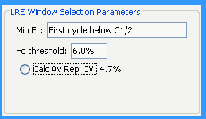

LRE window selection begins with assigning a "start cycle", which defines the bottom of the LRE window and corresponds to the earliest cycle within the LRE window. The LRE window is then expanded by adding one cycle at a time to the top of the window until a limit is reached. Effective automation of this process is crucial to the reliability of the LRE Analyzer, and was one of the most challenging aspects of its development.
Optical read precision is critical for start cycle selection
Although a primary objective was to maximize the size of the LRE window by placing the start cycle as early in a profile as possible, optical read precision became a major limitation. This is due to the fact that the accuracy of cycle efficiency determination can be dramatically compromised when reaction fluorescence is below the lower limit of the instrument's optical capacity. Large differences in this lower limit between different instruments, combined with the arbitrary nature of the fluorescence units used in real-time PCR, presented major challenges.
This prompted a default implementation based on a simple, albeit suboptimal method of designating the start cycle as the first cycle below C1/2. However, although this approach can be reasonably reliable under a number of reaction setups, an alternative method was developed that allows the lower limit of the LRE window to be manually specified. Based on entry of a "minimum FC", the start cycle is set to the cycle following the first cycle that produces a FC greater than this minimum (i.e. the cycle from which the EC denominator is taken). The "LRE Window Selection Parameters" panel within the Profile Editor window, allows the minimal FC and F0 threshold (see below) to be adjusted manually.
Default Settings

Selecting a Minimum FC
During early implementation of the LRE window parameters, it became apparent that a method for assessing the overall quantitative precision could be useful. The approach taken was based on the variance of target quantities generated by technical replicates; that is, the CV produced by replicate profiles. Referred to as the "Av Repl CV" (and assuming that replicate profiles are present within the database) averaging the quantitative variances from all replicate reaction sets provides such a general assessment. This not only proved to useful for selecting an optimal minimum FC, but also for assessing the overall performance of an assay. Although beyond the scope of this discussion, this has revealed, among other things, large differences in the instrument performance, due primarily to differences in the optical precision they produce.
A simple and generally effective method is thus to lower the minimum FC until the average replicate CV reaches a minimum.
Manual selection of Min FC
In this example, the overall quantitative variance has been reduced from 4.7% to 4.5%.
Defining the top of the LRE window via the F0 threshold
A major source of quantitative error discovered during early attempts to apply sigmoidal mathematics to PCR amplification, are distortions within the upper region of a profile1. For example, a common form, referred to as "plateau drift", is characterized by a continued increase in amplicon DNA beyond that predicted by the LRE model. In order to maximize quantitative accuracy, it is essential to exclude such aberrant cycles from the analysis1. The recursive nature of LRE analysis provided a relatively simple method for identifying aberrant cycles, which are apparent in both the FC and LRE plots:
An example of plateau drift
Particularly in the LRE plot, aberrant cycles are evident as they diverge from the LRE line, which in the case of plateau drifting produces points that progressively drift above the LRE line. An objective method for defining the top of the LRE window came from comparing the cycle F0 of the cycle immediately above the LRE window to the average F0 values generated by the cycles within the LRE window (average F0). If the difference is below a specified value, defined as the F0 threshold, the LRE window is expanded to include this next cycle and LRE analysis repeated. This process is continued until a cycle that exceeds the F0 threshold is encountered. As shown above in the LRE Window Selection Parameters panel, the default value is 6%.
The Tabular Summary provides a numerical perspective of the process, where "%Av. Fo" refers to the difference between a cycle's F0 and the average F0, expressed as a percentage:
Tabular Summary: 6% F0 threshold
In this example, cycle 29 generated a 6.84% difference and thus LRE window expansion was terminated at cycle 28 based on the 6% default that was applied in this example, which been found to be generally effective. It should be noted, however, that increasing the threshold much above 7% can lead to susceptibility to another form of distortion, referred to as "profile collapse":
An example of profile collapse
In this case the aberrant cycles fall below the LRE line. Although a detailed overview is beyond the scope of this discussion, when such cycles are included into the LRE analysis, Emax is overestimated , which in turn generates an underestimate of target quantity.
See also:
Manual Window Selection
1. Rutledge, RG (2004) Sigmoidal curve-fitting redefines quantitative real-time PCR with the prospective of developing automated high-throughput applications. Nucleic Acids Research 32: e178.